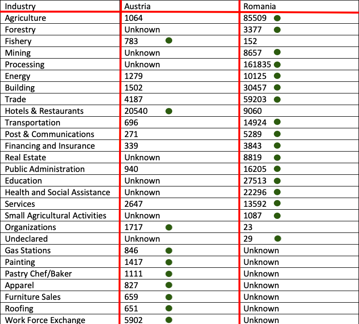

Where Hungarians Work Abroad
Austria Romania
Employment Statistics:
339,000 Hungarians based in Hungary work elsewhere in the EU. 92,000
Hungarians work in Austria.
Unemployment:
HUNGARY: 3.4%, AUSTRIA: 4.5%, ROMANIA: 3.8%
Average Wage:
HUNGARY: 11,353 USD, AUSTRIA: 55,648 USD, ROMANIA: 10,998 USD
There is this assumption that people will only go for high education jobs.From biologists (like my own father), to gas station attendents, the data from Austria and Romania shows, a wide range of industries' positions are filled by Hungarians.
So in Conclusion: Anyone Can Go

Green Dot = Higher Number Employed in This Country in This Given Industry
Sources:Romania sourceAustria sourceRomania Workforce sourceAustria Workforce source